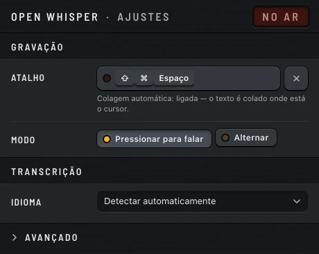
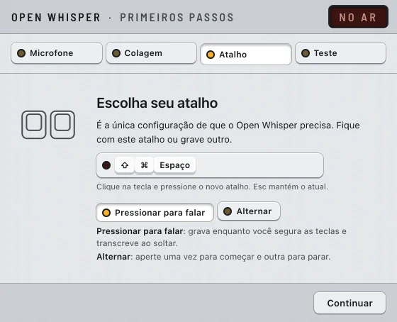
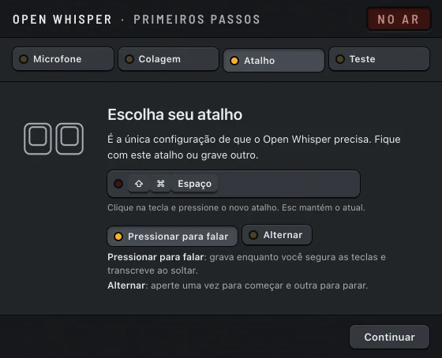
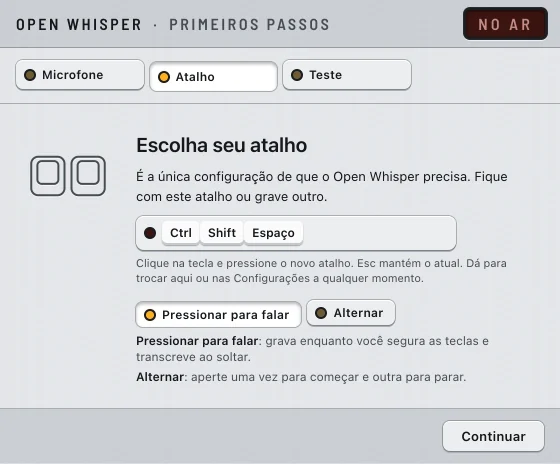
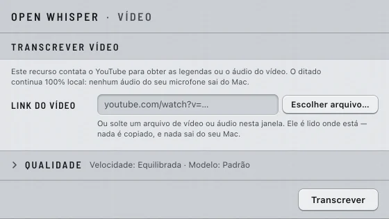
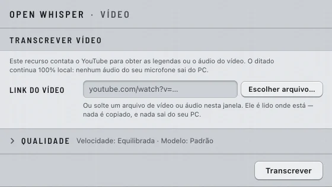
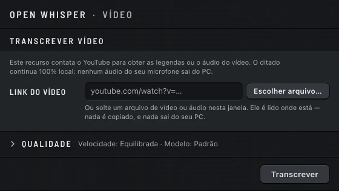
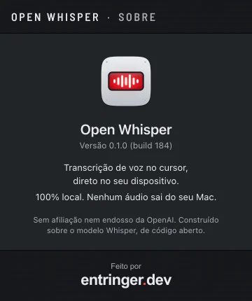
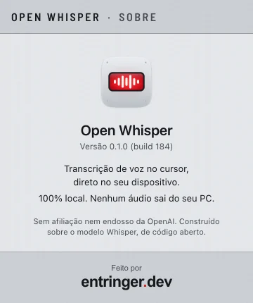

Local
Sua voz fica no seu computador.
A transcrição roda na sua máquina, com um modelo que vem dentro do app. Sem conta, sem servidor, sem internet para ditar. Qualquer monitor de rede mostra isso.
- Conta
- Nenhuma
- Áudio enviado
- Nenhum
- Analytics
- Nenhum
Marina,
100% grátisSem conta, sem assinatura, sem período de teste.
O Open Whisper transforma sua voz em texto em qualquer app: no seu computador, na sua língua, sem nada para configurar.
Experimente: segure ⇧⌘EspaçoCtrlShiftEspaço, e solte. Esc cancela. Experimente: segure a tecla abaixo. A demonstração usa uma frase de exemplo. Nada é ouvido. A demonstração precisa de JavaScript; o download abaixo, não.
Gravado num Mac, sem edição: uma voz sintética lê a mesma frase para o microfone, e o app instalado transcreve no computador e cola. As legendas também são do Open Whisper.
O Open Whisper mora na barra de menus no Mac e na área de notificação no Windows. Estas são todas as janelas dele.
















As janelas do próprio app, renderizadas a partir do código dele.
Sua voz fica no seu computador.
A transcrição roda na sua máquina, com um modelo que vem dentro do app. Sem conta, sem servidor, sem internet para ditar. Qualquer monitor de rede mostra isso.
Fale na sua língua. Ele entende sozinho.
Português, inglês, espanhol e dezenas de outras, detectadas enquanto você fala. Troque de língua entre um ditado e outro sem mexer em nada.
O que você disse nunca se perde.
Quando o texto não pode ser colado (um campo de senha, uma janela de administrador, nenhum lugar para escrever), ele espera na área de transferência e o app avisa. Cole onde quiser.
Cole um link do YouTube ou solte um arquivo de áudio ou vídeo e receba a transcrição com os tempos. Ou faça pelo terminal:
open-whisper transcribe entrevista.m4a --format srtUm link de vídeo acessa o YouTube para buscar o vídeo. Um arquivo é lido onde está e nunca sai do seu computador.
Grátis, sem conta e sem assinatura.
O Windows vai avisar uma vez. Veja o que fazer.
Confira o download e compare com o arquivo .sha256 na página do release:
certutil -hashfile Open.Whisper_0.1.0_x64-setup.exe SHA256A versão para Mac sai assim que a Apple assinar e notarizar o app. Ela vai instalar pelo Homebrew ou por um .dmg.